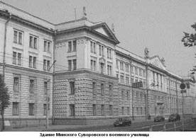
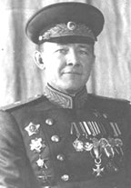

Минское суворовское военное училище было создано в 1953 г. в соответствии с постановлением Совета Министров СССР № 18461 от 21 мая 1952 г. Это постановление стало результатом ходатайства ЦК Коммунистической партии Белоруссии, Совета Министров БССР и командования Белорусского военного округа об открытии в г. Минске суворовского военного училища.
11 марта 1953 г. командующий войсками Белорусского военного округа Маршал Советского Союза С.К. Тимошенко получил телеграмму: «В соответствии с распоряжением Совета Министров Союза ССР №18461 от 21 мая 1952 г. Министр Вооруженных Сил СССР приказал:
Сформировать в городе Минске суворовское училище численностью переменного состава - 550 воспитанников. Училище именовать: «Минское Суворовское военное училище». Формирование училища начать с 1 мая, начало занятий - с 1 сентября 1953 г.

Здание Минского СВУ (Из коллекции Г.П. Толокольникова)
Начальник Генерального штаба Советской Армии Маршал Советского Союза В. Соколовский».
Для размещения училища на базе здания бывшей Минской духовной семинарии был создан учебный комплекс, учитывающий все особенности обучения и воспитания суворовцев.
В августе 1953 г. в одной из казарм военного городка Уручье, куда прибыли кандидаты для поступления в училище, был проведен одновременный набор во все классы Минского СВУ мальчиков 10-15 лет из Белорусской, Литовской, Латвийской ССР, Брянской, Велико-Луцкой, Полоцкой, Смоленской областей. Из принятых в училище в 1953 г. было почти 300 суворовцев, чьи родители погибли или пропали без вести на фронте, а также стали инвалидами.
В отличие от первых суворовских училищ, создававшихся в 1943 г., Минское СВУ оказалось в более выгодном положении, поскольку имело не только специально созданное под его нужды здание, но и получило возможность использовать 10-летний опыт организации учебного процесса в других училищах. Для организации учебно-воспитательного процесса в Минское СВУ прибыли более 25 педагогов из других училищ. Подбору преподавательских кадров для училища уделялось очень большое внимание. Среди преподавателей и офицеров-воспитателей было немало тех, кто имели громадный боевой опыт, прошли войну были награждены орденами и медалями.

Генерал-майор Д.К. Мальков (1904-1990). Начальник Минского СВУ (1953-1954)
Первым начальником Минского суворовского военного училища был назначен Герой Советского Союза гвардии генерал-майор Дмитрий Кузьмич Мальков, вступивший в Красную Армию еще в 1927 г., с первых и до последних дней Великой Отечественной войны, находившийся в действующей армии, а затем возглавлявший Ставропольское СВУ.
Генерал-полковник Н.Е Чибисов от имени министра обороны СССР вручает Красное Знамя начальнику училища генерал-майору Д.К. Малькову. Минск. 6 ноября 1953 г. (Из коллекции Г.П. Толокольникова)
Плановые учебные занятия в Минском СВУ начались, как и было предписано, 1 сентября 1953 г., однако днем училища считается 6 ноября 1953 г. В этот день на площади Парижской коммуны в Минске генерал-полковник Н.Е. Чибисов от имени Министра обороны СССР торжественно вручил начальнику училища генерал-майору Д.К. Малькову Красное Знамя и Грамоту Президиума Верховного Совета СССР. В ходе церемонии начальник училища передал Знамя его первому знаменосцу суворовцу А. Гулько (впоследствии - генерал-лейтенант). Однако, сейчас у училища новое Боевое Знамя, а первое Знамя передано в музей СВУ.
Летом 1956 г. состоялся первый выпуск из училища. Семь выпускников получили при этом «золотые» медали и четырнадцать – «серебряные». В течение первых пяти лет своего существования Минское СВУ вошло в число передовых по всем показателям учебно-воспитательной работы и спортивных достижений, и за достигнутые успехи 12 раз награждалось переходящим призом – бронзовым бюстом А.В. Суворова, учрежденным в 1950 г. в связи со 150-летием со дня смерти великого полководца.
В соответствии с Приказом Министра обороны №118 от 30 марта 1994 г. за воинскую доблесть, мужество и героизм, проявленные при выполнении воинского и интернационального долга, 6 выпускников были навечно зачислены в списки личного состава Минского суворовского военного училища.
За время существования Минского СВУ многократно менялись сроки обучения в нем, уточнялось содержание преподаваемых дисциплин. Так, в 2009 г. в связи с переходом на одиннадцатилетнюю систему образования, состоялся выпуск сразу двух рот (двух курсов). Затем срок обучения в училище стал составлять 5 лет и остается таким же и сегодня.
Знак выпускника Минского СВУ образца 1958г.
За время своего существования училище окончили около 13 тысяч человек. Более 40 из них стали генералами, среди них первый Министр обороны Республики Беларусь – генерал-полковник Петр Григорьевич Чаус и бывший Министр обороны Республики Беларусь, а с 2013 г. председатель Государственного пограничного комитета Беларуси – генерал-полковник Леонид Семенович Мальцев.
Независимо от времени обучения в училище и происходивших в нем перемен, выпускники Минского СВУ всегда сохраняли и сохраняют чувство преданности своему дому, ставших для многих родным.